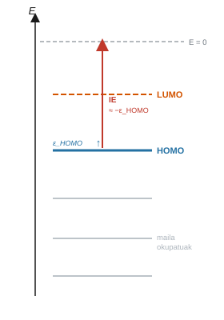
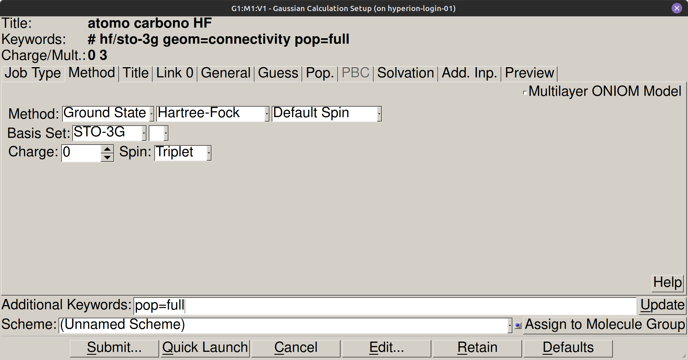
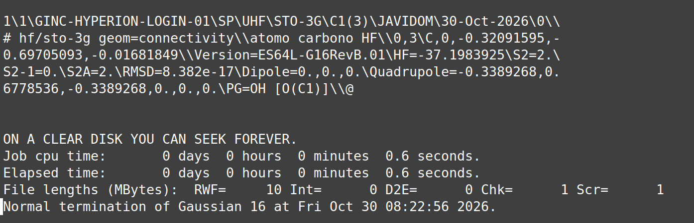
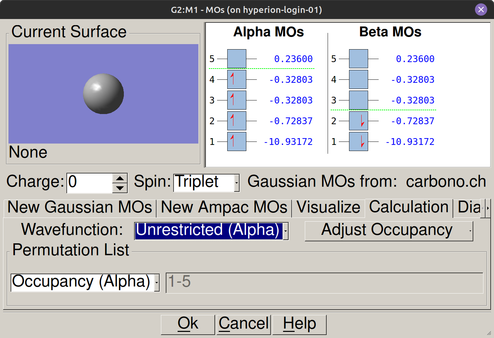
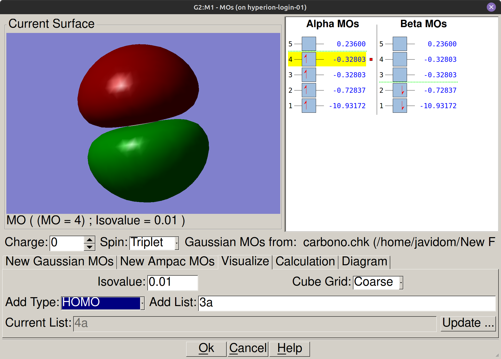

Atomoak eta Koopmans-en teorema#
Sarrera#
Ionizazio-energiak nukleoak kanpoko elektroiei eragiten dien erakarpen-indarra neurtzen du, eta elementuen erreaktibitate kimikoa eta aldizkako joerak zehazten ditu. Hartree-Fock kalkuluak Gaussian programan eginez, bi hurbilketa osagarri aplikatzen dira propietate hori ebaluatzeko: atomo neutroaren eta bere katioiaren arteko energia osoaren diferentzia zuzena (\(\Delta E\)), eta energia handieneko orbital okupatutik abiatuta egindako estimazioa, Koopmans-en teorema erabiliz (\(-\varepsilon_{\text{HOMO}}\)).
Helburuak#
Atomo neutroen eta katioi monokargatuen energia elektroniko osoa kalkulatu Hartree-Fock metodoa erabiliz Gaussian 16, Revision A.03 programan.
Ionizazio-energia kalkulatu diferentzia autoegokituaren bidez (\(\Delta E\)) eta orbitalen estimazioaren bidez, Koopmans-en teorema erabiliz (\(-\varepsilon_{\text{HOMO}}\)).
Kalkulatutako ionizazio-energiak balio esperimentalekin alderatu lehen eta bigarren periodoko elementuetan.
Energia handieneko orbital okupatuen (HOMO) banaketa espaziala eta simetria bistaratu GaussView programan.
Kontzeptu gakoak#
Zergatik dira energiak negatiboak?#
Atomo baten energia elektronikoa erreferentzia-egoera batekiko neurtzen da, non nukleoa eta elektroi guztiak pausagunean eta infinituan bananduta dauden, elkarrekintzarik gabe. Atomo lotua erreferentzia-egoera hori baino egonkorragoa denez, bere energia beti negatiboa da. SCF Done lerroan agertzen den balioa zenbat eta negatiboagoa izan, orduan eta egonkorragoa da sistema. Energia osoan emaitza positibo batek kalkuluaren konfigurazioan akats bat dagoela adieraziko luke.
HOMO eta LUMO#
Orbital molekularrak energia txikienetik handienera ordenatzen dira. Energia handieneko orbital okupatuari HOMO (ingelesez Highest Occupied Molecular Orbital) deritzo, eta elektroiak ateratzeko errazenak ditu. Lehen orbital hutsa, LUMO (Lowest Unoccupied Molecular Orbital), elektroiak jasotzeko prest dagoen orbitala da. HOMO mailaren eta hutsune-mailaren arteko aldea sistemak elektroi bat ateratzeko behar den energiaren lehen estimazioa da.
Oharra
Gaussian irteeran pop=full, HOMOaren energia azken lerroko Alpha occ. eigenvalues azken balio numerikoari dagokio. Hurrengo lerroko lehen balioa Alpha virt. eigenvalues LUMOari dagokio.


Ionizazio-energia eta Koopmans-en teorema#
Atomo neutro baten \(A\) ionizazio-energia gas-fasean elektroi bat ateratzeko eta \(A^+\) katioia sortzeko behar den gutxieneko energia da, \(A \rightarrow A^+ + e^-\) prozesuaren arabera. Praktika honetan bi modu independentetan kalkulatzen da. Lehenengoa katioiaren eta atomo neutroaren arteko SCF energien diferentzia zuzena da, eta horretarako bi kalkulu bereizi behar dira. Bigarrena Koopmans-en teoreman oinarritzen da, eta balio hori atomo neutroaren HOMO orbitalaren energiatik abiatuta estimatzeko aukera ematen du, katioia kalkulatu beharrik gabe.
Oharra
Koopmans-en teoremak orbital izoztuen hurbilketa hartzen du, \(A^+\) katioiaren orbitalak \(A\) atomo neutroaren berdinak direla suposatuz. Ionizazio-prozesu fisiko batean, elektroi baten galerak elektroi arteko aldarapena murrizten du eta geratzen den hodei elektronikoa nukleorantz uzkurtzea eragiten du (orbitalen erlaxazioa). Koopmans-en hurbilketak erlaxazio egonkortzaile hori eta korrelazio-energiaren desberdintasunak alde batera uzten dituenez, \(-\varepsilon_{\text{HOMO}}\) balioa diferentzia autoegokituan kalkulatutako balioarekin alderatuta \(\text{IE}_{\Delta E}\) desberdina da pixka bat.
Spin-anizkoiztasuna#
Spin-anizkoiztasunak sistemarako eskuragarri dauden spin-egoera kuantiko kopurua adierazten du eta \(2S+1\) gisa kalkulatzen da, non \(S\) elektroi desparekatuen spinen batura den. Elektroi guztiak parekatuta dituen atomo batek \(S=0\) eta anizkoiztasun 1 (singletea) ditu. Elektroi desparekatu batek \(S=1/2\) eta anizkoiztasun 2 (dobletea) ematen ditu. Anizkoiztasun-balio oker bat esleitzeak Gaussianek orbitalen artean elektroiak gaizki banatzea eragiten du \(\alpha\) eta \(\beta\), eta horrek emaitza baliogabetzen du edo SCF zikloaren konbergentzia eragozten du.
Abisua
Egiaztatu beti spin-anizkoiztasunaren balioa kalkulua bidali aurretik: balio oker batek emaitzak baliogabetzen ditu edo SCF konbergentzia eragozten du.
Prozedura#
Adi
Kalkulu bakoitzaren ondorengo nahitaezko egiaztapena: ireki .log fitxategia testu-editorearekin eta egiaztatu azken lerro zehatza dagoela:
Normal termination of Gaussian 16
1. urratsa: GaussView ireki eta atomoa marraztu#
Ireki GaussView aplikazioen menutik edo sistemaren abiarazletik.
Ireki atomo-zatien paleta View → Element Fragments sakatuz (edo goiko tresna-barrako taula periodikoaren ikonoa sakatuz).
Hautatu kalkulatu nahi den elementu kimikoa (adibidez, karbonoa, C).
Egin klik bakarra ezkerreko botoiarekin marrazketa-leiho nagusian. Erdigune atomiko isolatu bat agertuko da, loturarik gabe.
2. urratsa: Atomo neutroaren kalkulua konfiguratu#
Sartu Calculate → Gaussian Calculation Setup menura.
Job Type fitxan, hautatu Energy.
Method fitxan, konfiguratu kalkuluaren parametroak:
Eremua |
Balioa |
|---|---|
Metodoa |
HF |
Oinarri-multzoa |
STO-3G |
Karga |
0 |
Spin (Anizkoiztasuna) |
Kontsultatu anizkoiztasunen taula atomo neutro bakoitzerako |
Title fitxan, idatzi deskribapen identifikatzaile bat (adibidez,
C neutro HF STO-3G).Additional Keywords fitxan, idatzi zehazki:
pop=full. Instrukzio honek orbital molekular guztien energiak irteera-fitxategian sartzen ditu.
Erreferentziako anizkoiztasunen taula (\(2S+1\)):
Atomoa |
\(Z\) |
Konfigurazioa |
Anizkoiztasuna |
|---|---|---|---|
H |
1 |
1s¹ |
2 |
He |
2 |
1s² |
1 |
Li |
3 |
[He] 2s¹ |
2 |
Be |
4 |
[He] 2s² |
1 |
B |
5 |
[He] 2s² 2p¹ |
2 |
C |
6 |
[He] 2s² 2p² |
3 |
N |
7 |
[He] 2s² 2p³ |
4 |
O |
8 |
[He] 2s² 2p⁴ |
3 |
F |
9 |
[He] 2s² 2p⁵ |
2 |
Ne |
10 |
[He] 2s² 2p⁶ |
1 |


3. urratsa: Kalkulua abiarazi eta fitxategia gorde#
Sakatu Bidali botoia Gaussian Calculation Setup leihoaren behealdean.
Gorde fitxategia elkarrizketa-koadroan, adierazi sarrera-fitxategiaren izena
.gjf(adibidez,C_neutro_HF_STO3G.gjf) eta gorde laborategiko laneko direktorioan:__PROTECTED_BLOCK_36__.Berretsi elkarrizketa-koadroa Save sakatuz eta ondoren Bidali.
Ikusi exekuzio-egoera GaussView-ren beheko barran, kalkulua amaitu arte (segundo gutxi batzuk elementu arinentzat).
4. urratsa: Amaiera zuzena egiaztatu#
Ireki sortutako
.logfitxategia (C_neutro_HF_STO3G.log) testu-editorearekin (File → Open editorean edo eskuineko botoiarekin fitxategian klik eginez).Joan fitxategiaren amaierara Ctrl + Amaiera sakatuz.
Egiaztatu fitxategiaren azken lerroa zehazki bat datorrela:
__PROTECTED_BLOCK_37__. Ez bada agertzen, kalkulua huts egin du eta ez dira datuak erabili behar.


5. urratsa: Irakurri guztizko energia E(N)#
Testu-editorean irekitako
.logfitxategian, sakatu Ctrl + B bilaketa aktibatzeko.Idatzi bilaketa-testua:
SCF Done.Aurkitu guztizko energia
SCF Done: E(RHF) = ...lerroan (geruza itxiko sistema multiplicitate 1ekin) edoSCF Done: E(ROHF) = ...lerroan (geruza irekiko sistema multiplicitate desberdinarekin).Kopiatu balio numerikoa unitate atomikoetan (A.U. / Hartree) eta itsatsi emaitzen taulako \(E(N)\) zutabean.
6. urratsa: Irakurri HOMO orbitalaren energia eta bistaratu orbitala#
Irakurketa numerikoa
.logfitxategian:Irekitako
.logfitxategian, bilatu Ctrl + B-rekin testu hau:Alpha occ. eigenvalues.Aurkitu azken lerroko azken zenbakia
Alpha occ. eigenvalues --. Balio numeriko hori energia handieneko betetako orbitalari dagokio, \(\varepsilon_{\text{HOMO}}\) (Hartree-etan).Aurkitu hurrengo lerroko lehen zenbakia
Alpha virt. eigenvalues --, energia txikieneko hutsik dagoen orbitalari dagokiona (\(\varepsilon_{\text{LUMO}}\)).Kopiatu \(\varepsilon_{\text{HOMO}}\) balioa (Hartree-etan) emaitzen taulako dagokion zutabean.
Egiaztapena eta bistaratzea GaussView-n:
GaussView-n, ireki kalkuluaren ondoriozko
.chkfitxategia eta sartu Results → MOs menura.New Gaussian MOs fitxan, ikusi energia-mailen diagrama eta spin \(\alpha\) eta \(\beta\)-ren orbitalen okupazioa. Karbono neutroaren triplete egoeran, energia handieneko betetako orbitalak (\(\alpha\), 4. orbitala) \(-0.32803\text{ Ha}\) energia du.


Orbitalaren hiru dimentsioko banaketa sortzeko, leiho horren barruan Visualize fitxa hautatzen dugu. 4. orbitala (HOMO) hautatzen dugu, Isovalue eremua
0.01ezartzen dugu eta Update sakatzen dugu. Ezkerreko azpileihoan \(2p\) orbital atomikoaren bi lobuluak agertuko dira.


7. urratsa: Konfiguratu eta kalkulatu A⁺ katioia#
Itzuli GaussView-ra pantailan dagoen atomo-zentro berarekin.
Ireki berriro Calculate → Gaussian Calculation Setup panela.
Method fitxan, aldatu parametro hauek:
Charge: aldatu
0-tik1-ra.Spin: doitu katioi-espezieari dagokion multiplicitatera (ikusi beheko taula). HOMOtik elektroi bat kenduta, desparekatutako elektroien kopurua aldatu egiten da.
Mantendu Job Type
Energy-n, MethodHF-n, Basis SetSTO-3G-n eta Additional Keywords-enpop=fullgako-hitza.Title fitxan, idatzi:
C cation HF STO-3G.Sakatu Bidali, gorde izen adierazgarri batekin (adibidez,
C_cation_HF_STO3G.gjf){{practicas_folder}}-n eta berretsi bidalketa.Egiaztatu amaiera zuzena
.logberrian eta atera guztizko energia \(E(A^+)\)SCF Donelerroan.
Eremua |
Neutroa |
Katioia |
|---|---|---|
Charge |
0 |
+1 |
Spin |
Multiplicitate neutroa |
Multiplicitate katioia |
8. urratsa: Kalkulatu ionizazio-energiak#
Kalkulatu ionizazio-energia zuzeneko diferentziaren bidez (\(\text{IE}_{\Delta E}\)):
Kalkulatu Koopmans-en teoremaren estimazioa (\(\text{IE}_{\text{Koopmans}}\)):
Erregistratu bi balioak elektronvoltetan datuen taulan eta kalkulatu desbiderapen portzentuala erreferentziako balio esperimentalarekiko.
Emaitzak eta analisia#
Kalkulatutako atomo bakoitzerako, .log fitxategitik ateratako bi energiak erregistratzen ditugu eta ionizazio-energiaren bi estimazioak kalkulatzen ditugu. Ondorengo taulak Hartree-etan jasotzen ditu balioak eta emaitzak eV-ra bihurtuta. Erreferentziako balio esperimentalak sartzen dira errore portzentuala kalkulatzeko.
Bibliografia#
Gaussian 16, Revision A.03, M. J. Frisch, G. W. Trucks, H. B. Schlegel et al., Gaussian, Inc., Wallingford CT, 2016.
Atkins, P.; De Paula, J. Kimika Fisikoa, 10. ed.; Editorial Médica Panamericana, 2018. 9. kap. (Egitura elektroniko atomikoa).
NIST Chemistry WebBook, https://webbook.nist.gov (ionizazio-energiaren datu esperimentalak).
Szabo, A.; Ostlund, N. S. Modern Quantum Chemistry. Dover, 1996.
Urrutirago joateko (aukerakoa)
Esplorazio honek aztertzen du nola aldatzen den emaitzaren kalitatea oinarri-funtzioen multzoa handitzean. Karbono atomo neutroaren kalkulua errepikatzen dugu hiru oinarri desberdinekin eta HOMOren energia eta Koopmans-en estimatutako ionizazio-energia alderatzen ditugu balio esperimentalarekin. Prozedura praktika nagusiaren berdina da: Basis Set eremua bakarrik aldatzen dugu Gaussian Calculation Setup → Method-en.
Oinarria |
\(\varepsilon_{\text{HOMO}}\) (Ha) |
IE\(_{\text{Koopmans}}\) (eV) |
IE exp. (eV) |
Errorea (%) |
|---|---|---|---|---|
STO-3G |
−0.328 |
8.93 |
11.26 |
20.7 |
3-21G |
(kalkulatzeko) |
(kalkulatzeko) |
11.26 |
(kalkulatzeko) |
6-311G |
(kalkulatzeko) |
(kalkulatzeko) |
11.26 |
(kalkulatzeko) |
Oharra
Zein zentzutan aldatzen da PROTECTED_BLOCK_73 oinarriaren tamaina handitzean? Txikitzen al da errorea balio esperimentalarekiko modu monotonoan, edo ba al dago kasurik oinarri handiago batek emaitza hobetzen ez duena? Lotu desberdintasunak oinarri bakoitzak balentzia-elektroien dentsitatea deskribatzeko duen gaitasunarekin.